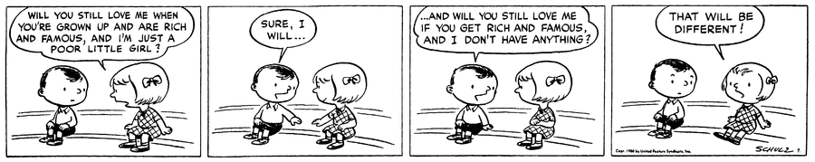
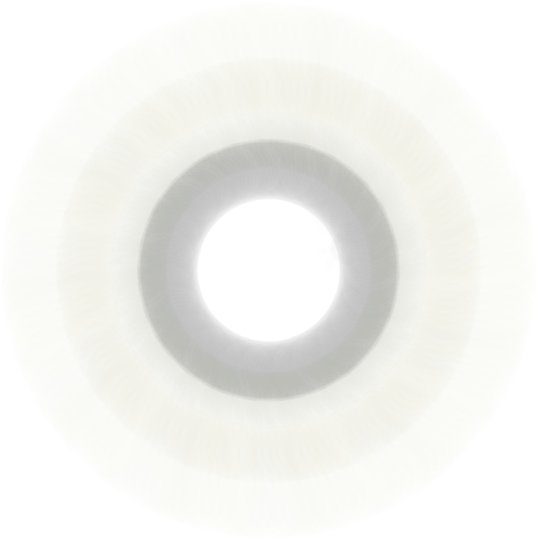
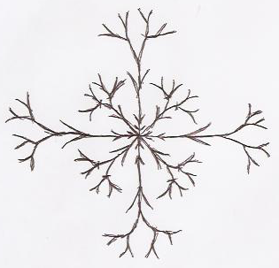
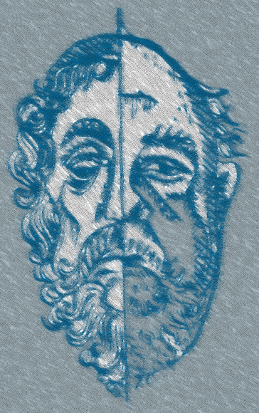
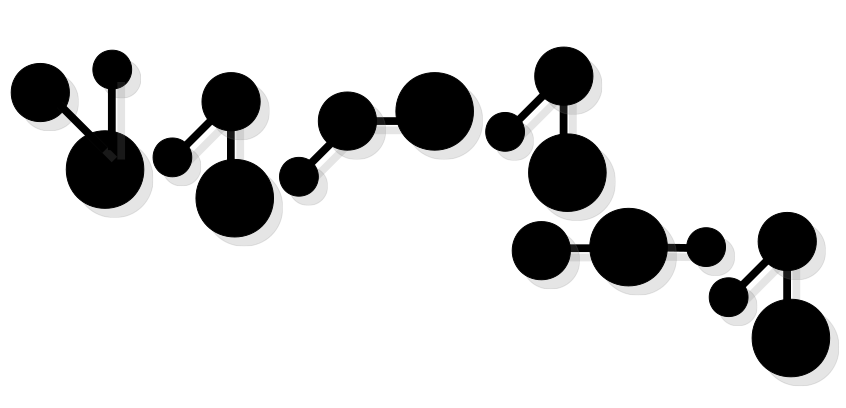
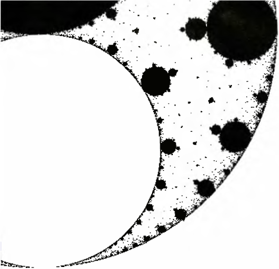

Memorias
Soy el distraído que se tropieza cuando camina. A veces, el que va caminando a toda prisa.
Trato de ser amable y estar menos equivocado.
Me gustan los libros viejos, la lógica combinatoria, los pensamientos tautológicos y los oxímoron.
Soy invisible...
(Sin título)

(Sin título)
Voy quemando los puentes que cruzo.
(Sin título)
¡Ingenioso estúpido!
The spirit that lives in the computer

2ⁿ

The eyes of fire

The eyes of fire, the nostrils of air, the mouth of water, the beard of earth.
— The Marriage of Heaven and Hell. William Blake. Dibujo de Elvira Gascón.
Our local horror history
El siguiente texto lo encontré hace meses en la sala de computadoras de la facultad, en una máquina que solía utilizar cada día durante la clase. No sé quién lo escribió ni por qué lo dejó al alcance de manos ajenas y, particularmente, no sé por qu...
110290

Why is geometry often described as "cold" and "dry"?

Why is geometry often described as “cold” and “dry”? One reason lies in its inability to describe the shape of a cloud, a mountain, a coastline, or a tree. Clouds are not spheres, mountains are not cones, coastlines are not circles, and bark is not...